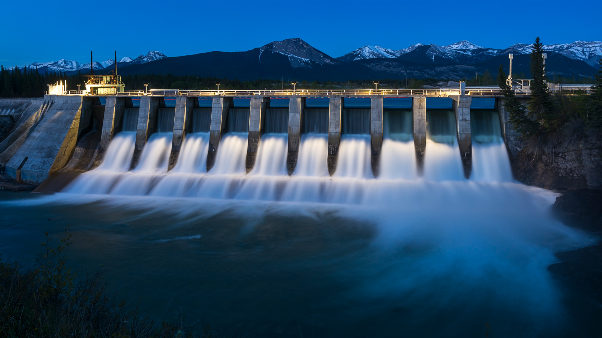
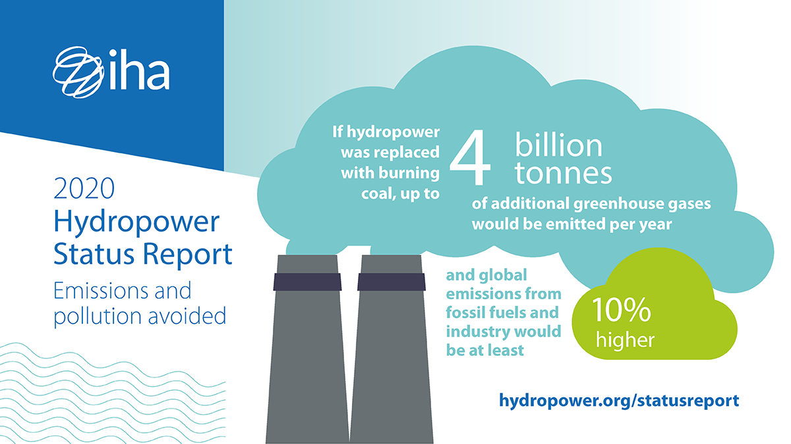
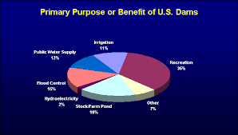
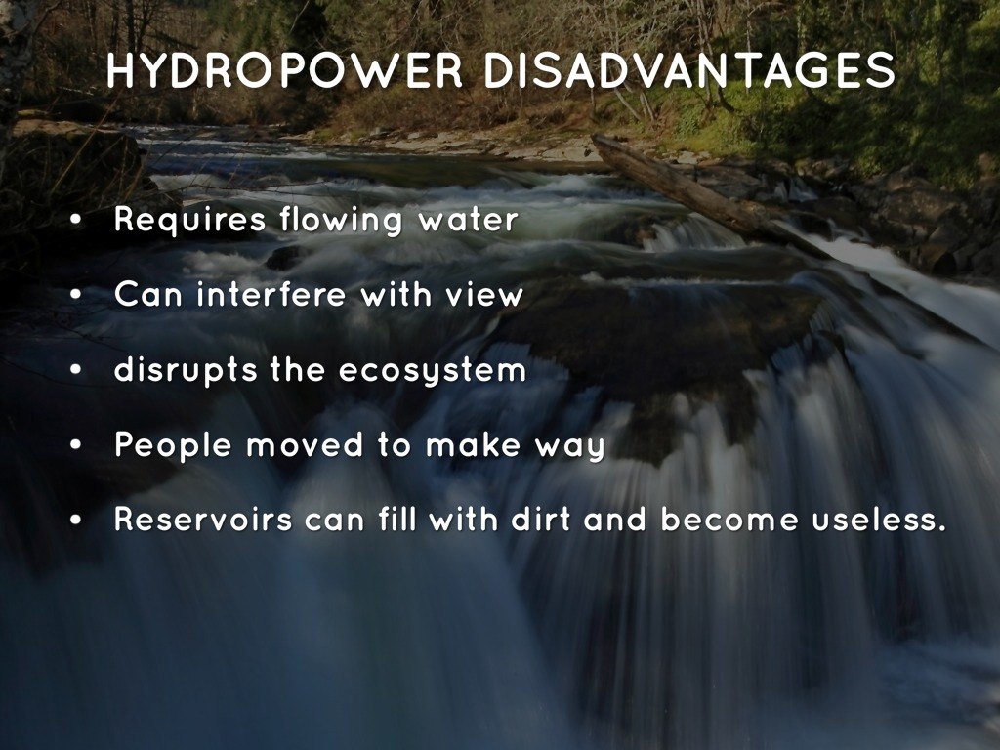

Hydropower is a renewable energy source that generates electricity by harnessing the energy of moving water. It is considered one of the oldest and most reliable sources of energy, with hydroelectric power plants providing approximately 16% of the world's electricity.

One of the main advantages of hydropower is that it is a clean and renewable source of energy. Unlike fossil fuels, which release harmful greenhouse gases into the atmosphere, hydropower does not produce nearly as many pollution as fossil fuels. Additionally, hydropower plants can operate for decades with minimal maintenance, making them a cost-effective and reliable source of energy.

Another advantage of hydropower is that it can be used for a wide range of purposes, including generating electricity, irrigation, flood control, and water supply. Hydropower plants can also be built in various sizes to suit different needs, from small-scale micro-hydro systems to large-scale dams.

However, there are also some drawbacks to hydropower. One major concern is the impact that dams can have on local ecosystems and communities. The construction of large dams can displace people from their homes and disrupt natural habitats, leading to the loss of biodiversity and cultural heritage sites. Dams can also alter river flows and water temperatures, affecting downstream ecosystems and fisheries.
In conclusion, hydropower is a valuable source of renewable energy that offers many benefits but also has some significant drawbacks. As with any energy source, it is important to carefully consider its environmental and social impacts before deciding whether to invest in hydropower projects.